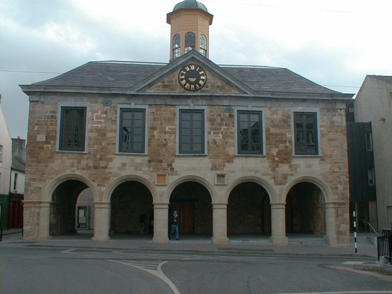
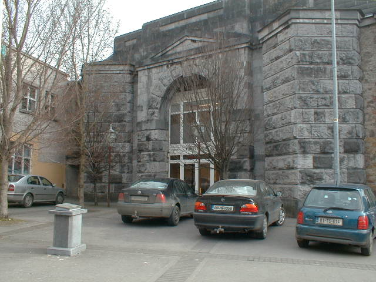
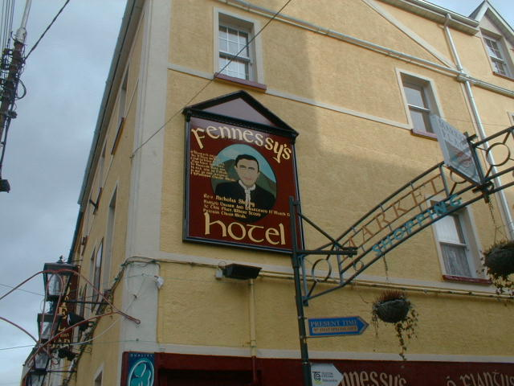

The Main Guard
-Jail
This elegant 17th Cntury building was built by James Butler 1st Duke of Ormond between 1673 and 1684 as a prestigous courthouse for the Palatine of County Tipperary. Amoung the buildings that were destroyed during Cromwells attack was the North Gate where manor courts were formerly held. The Duke of Ormonde ordered a new building to house the Palatine Court where civil and criminal cases were tried.

As well as a courthouse, there were private apartments, a dining room and a drawing room. The ground floor was an open arcade with 5 semi-circular arches at the west side and similar arches on the north side. The Main Guard was a "Thosel" an office wher tolls, duties and customs were collected. It was also a convenient place for civic gatherings. It was an assize court from 1716 until 1810 when it became a barracks hence the name Main Guard which still survives.

Fr Nicholas Sheehy was tried here in 1766. He was well known for his opposition to Penal Law and was arrested for treason. He was found not guilty in Dublin but re-arrested and brought to Clonmel to face charges for the murder of John Bridge. He was arrested along with another man named Edward Meehan. They were tried and convicted and sent to the jail. They were there until they were hung at Market Street.The victim was later seen alive and well in Newfoundland.
